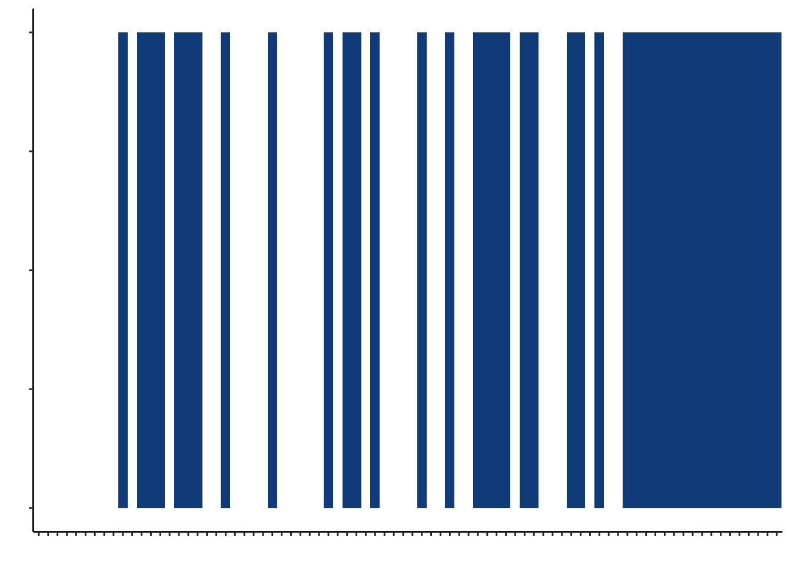
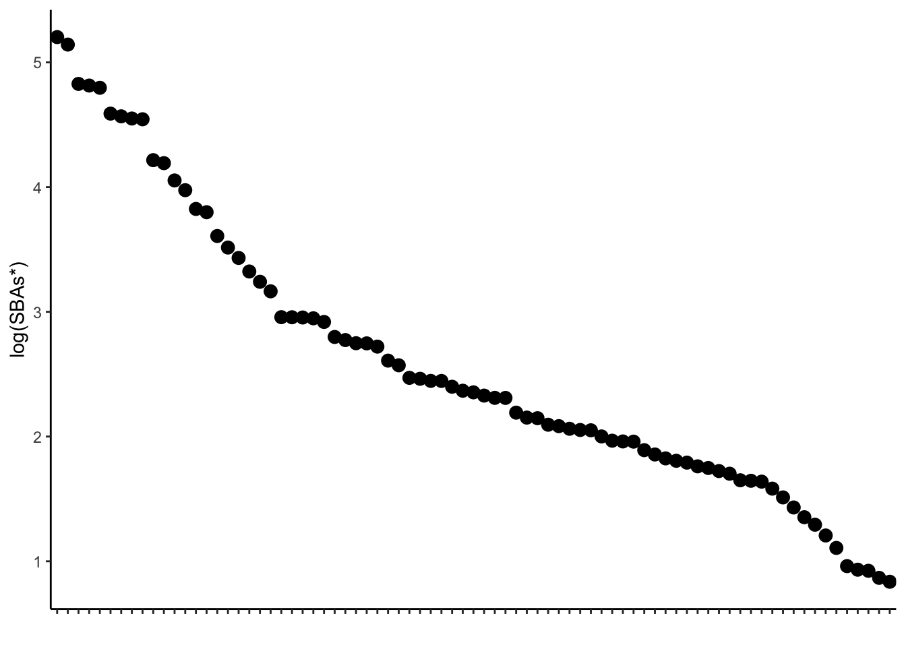
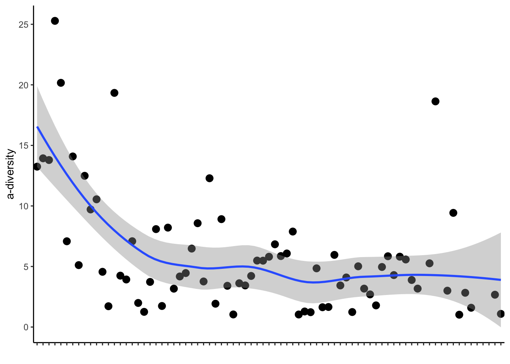
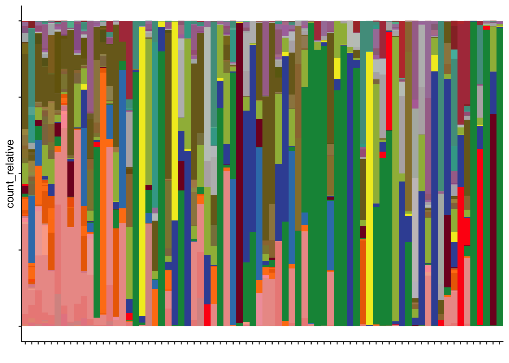

Chapter 6 Create landscape of all peri-GVHD-onset samples (figure 5)
6.1 Define sample order from higher nonUDCA secondary BAs to lower
samples_key<-BSH_metalphlan %>% distinct(sampleid) %>%
left_join(later_pools_final %>% select(sampleid, secondary_nonUDCA)) %>%
left_join(cohort_BAS) %>%
filter(later=="Y") %>%
arrange(desc(secondary_nonUDCA)) %>%
left_join(ursodiol) %>% filter(ursodiol2=="Y")
level_order <- samples_key$sampleid6.2 GI GVHD plot
gi_gvhd_plot<-cohort_BAS %>%
filter(later=="Y") %>%
ggplot((aes(x = factor(sampleid, levels = level_order), y = 1, fill = GI_GVHD))) +
geom_raster(color = "black", size = 0.5) +
theme_classic()+ theme(axis.text.x=element_blank())+
xlab("")+
ylab("")+
scale_fill_manual(values=c("white", "dodgerblue4"))+
theme(axis.text.y = element_blank())+
theme(legend.position = "none") #only for plotting reasons
gi_gvhd_plot
6.3 SBA plot
sba_plot<-ggplot(samples_key, aes(x=factor(sampleid, level=level_order), y=log10(secondary_nonUDCA)))+
geom_point(size=3)+theme_classic()+
ylab("log(SBAs*)")+
theme(axis.text.x=element_blank())+
xlab("")
sba_plot
6.4 A-diversity plot
adiv_pre<-cohort_BAS %>%
filter(later=="Y") %>%
left_join(asv_alpha_all) %>% #add a-diversity
inner_join(samples_key) %>%
arrange(desc(secondary_nonUDCA)) %>%
mutate(rank = 1:nrow(.))
adiv_plot<-ggplot(adiv_pre, aes(x = rank, y = simpson_reciprocal)) +
geom_point(size=3) +
geom_smooth(method = "loess") +
theme_classic() +
ylab("a-diversity") +
#xlab("sampleid") +
theme(axis.text.x = element_blank()) +
xlab("") +
scale_x_discrete(limits = adiv_pre$rank[order(-adiv_pre$rank)])
adiv_plot
6.6 Microbiome composition
setDT(asv_annotation_blast_color_ag)
asv_color_base_set = unique(asv_annotation_blast_color_ag[,.(color_label_group,color_base)])
color_base_set_asv_carT = asv_color_base_set$color_base
names(color_base_set_asv_carT) =asv_color_base_set$color_label_group;
gg = ggplot(asv_color_base_set, aes(color_label_group,y=1,fill=color_label_group)) + geom_tile() +
scale_fill_manual(values = color_base_set_asv_carT) +
theme_classic() +
theme(axis.text.x = element_text(angle=60,hjust = 1)) +
theme(legend.position = "none")
#color_set_asv_carT maps each distinct taxonomic group to its corresponding color.
asv_color_set = unique(asv_annotation_blast_color_ag[,.(color,color_label_group_distinct,color_label_group,color_base)])
color_set_asv_carT = asv_color_set$color
names(color_set_asv_carT) =asv_color_set$color_label_group_distinct;
setDT(counts_samples)
setDT(asv_annotation_blast_color_ag)
m = merge(counts_samples[,.(asv_key,sampleid,
count,count_relative,count_total)],
asv_annotation_blast_color_ag[,.(asv_key,color_label_group_distinct)]);
sample_composition <- m %>%
left_join(cohort_BAS %>% select(PID, sampleid)) %>%
left_join(cohort_BAS) %>%
filter(later=="Y")
m1<-sample_composition %>%
group_by(sampleid, color_label_group_distinct) %>%
inner_join(samples_key) %>%
mutate(sampleid = fct_reorder(sampleid, desc(secondary_nonUDCA)))
m1$color_label_group_distinct = factor(m1$color_label_group_distinct,levels = sort(unique(m1$color_label_group_distinct),decreasing = T));
gg_composition = ggplot(m1,
aes(x=factor(sampleid, levels=level_order),
y=count_relative,
fill=color_label_group_distinct) ) +
geom_bar(stat = "identity",position="fill",width = 1) +
theme_classic() +
theme(axis.text.x = element_blank(),
axis.text.y = element_blank(),
legend.position = "none") +
xlab("")+
scale_fill_manual(values = color_set_asv_carT);
print(gg_composition)